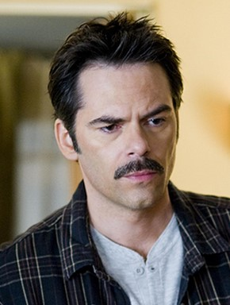
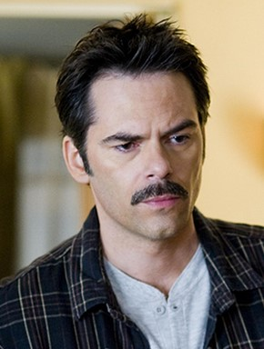

CHARLIE SWAN
BOOK VS. MOVIE
 


key traits:"Brown eyes," with "curly brown hair" that has "dwindled." Technically, there's no mention of a mustache, but there's also no mention of a lack of a mustache, so...
Charlie was born and raised in Forks by his parents, Geoffrey and Helen Swan. Geoffrey and Helen were both in their mid-forties when Charlie was born; they had thought they were unable to have children, so Charlie was a huge, but very welcome, surprise. He remained an only child and stayed close to both his parents. Billy Black, Harry Clearwater, and Quil Ateara IV were his close friends since childhood. During his teenage years, Charlie always felt a little bit on the outside of his circle of friends. He attributed that distance to the fact that the others all belonged to the Quileute tribe and he did not. In reality, Billy, Harry and Quil were caught up in the secret world they were forbidden to tell Charlie about. As an adult, Charlie joined the Forks Police Department. He wanted to go to college, but his parents' health began deteriorating at the time and he felt that he needed to stay close to home. His mother was in the early stages of Alzheimer's and his father's mobility was being curtailed by severe arthritis. Charlie did everything he could to help care for them.
During Charlie's first summer as a cop, he met Renée Higginbotham. She was driving up the Pacific Highway with a group of her friends, and they stopped to camp at First Beach in La Push. Charlie was visiting Billy when he met Renée on the beach. There was an instant attraction between the two. They spent a few days together before her friends were ready to continue their journey. Renee promised to visit Charlie on the return trip. In her absence, Charlie realized just how much he had fallen for Renée. She returned as promised, and he convinced her to stay when her friends left. Renée was impetuous and romantic by nature, and she loved the passionate whirlwind relationship. Charlie quickly proposed and Renée accepted. They were married at the courthouse in Port Angeles, Washington, just a few weeks later. Charlie bought a small house down the street from his parents' home. For a little while, he and Renée were deliriously happy. Charlie was even happier when he found out Renée was pregnant with their first child a few months later.
Charlie's life took a downturn during Renée's pregnancy. Both his parents' conditions worsened, and his father needed Charlie's help with his mother every day. At the same time, depression began to take a major toll on Renée. She wanted Charlie to leave Forks with her and start over somewhere sunnier, but Charlie couldn't do that. Renée had the baby, and her depression was only compounded by the postpartum hormones. A few months after Bella was born, Renée decided she couldn't live in Forks anymore. She left with Bella, leaving Charlie devastated. Charlie wanted to follow her, but he couldn't leave his parents. He didn't contest the divorce or the child support. All he asked for was time with Bella. He did not stop loving Renée.
Four years later, within six months of each other, Geoffrey and Helen Swan died. Charlie was alone, aside from his summer visits with Bella. He devoted himself to his job and worked his way up through the ranks to become chief of police in Forks. He maintained his longtime friendship with Billy Black and Harry Clearwater, and the three friends spent a lot of their free time fishing together. Billy in particular was a great support to Charlie during the difficult years following his divorce and the loss of his parents; they became even closer. Later, when Billy lost his wife, Sarah, to a car accident, Charlie was able to be there for Billy as Billy had been for him.
When the Cullens moved to town, Charlie found their quiet presence pleasant, but Billy thought the opposite and tried to warn him. When he found out that some local boys from the Quileute reservation boycotting the hospital, it caused a rift between Billy and Charlie for a few years.
He was excited when Bella decided to move back to Forks for the rest of her school years. Furthermore, she will be living with him.